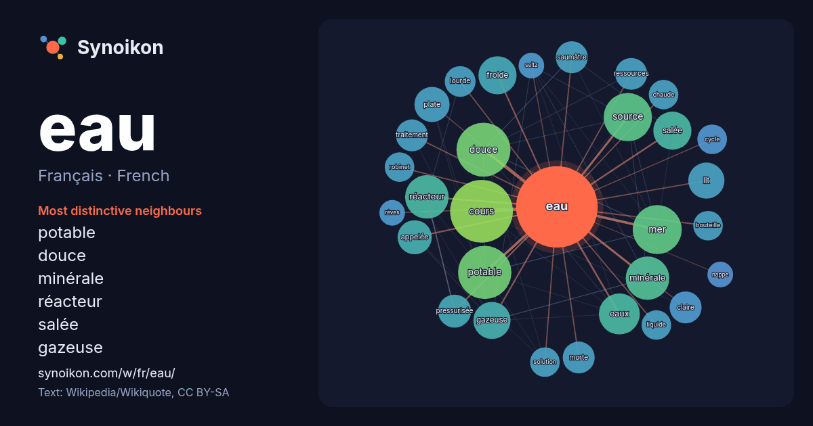

Français · French · popular word
eau
“water” · The words found around it in 1134 instances from French Wikipedia, Wikiquote.

Most distinctive neighbours
- potable 38×
- douce 37×
- minérale 27×
- réacteur 25×
- salée 21×
- gazeuse 20×
- froide 20×
- mer 19×
- cours 18×
- source 18×
- eaux 18×
- plate 17×
- lit 16×
- pressurisée 16×
- saumâtre 15×
- claire 14×
- robinet 13×
- chaude 13×
- morte 12×
- lourde 12×
× = how many times more often than in general French Wikipedia text.
Most frequent neighbours
- cours 54
- douce 40
- potable 39
- mer 33
- source 32
- minérale 26
- réacteur 26
- eaux 23
- froide 20
- salée 20
- gazeuse 19
- lit 18
- plate 17
- appelée 16
- pressurisée 15
- château 14
- claire 14
- morte 14
- nom 14
- ressources 14
In context
- précise : eau minérale, eau de Seltz, eau de source, eau de mer, eau douce, eau potable, eau de pluie, eau du robinet, eau de table, eau gazeuse, eau plate Wikipedia snippets · Eau
- aérienne à de l’eau ; Eau de cristallisation, l'eau présente dans les cristaux ; Eau de Dakin, un antiseptique ; Eau déminéralisée, une eau qui ne contient Wikipedia snippets · Eau (homonymie)
- Une eau est dite potable (du latin potabilis, qui signifie « qui peut être bu ») lorsqu'elle présente certaines caractéristiques — concentration en chlorures Wikipedia snippets · Eau potable
- Eau sauvage Eau sauvage est un parfum des Parfums Christian Dior, créé par le « nez » Edmond Roudnitska en 1966. Pierre Camin créa le flacon. C'est une Wikipedia snippets · Eau sauvage
- Eau douce (film). L'eau douce est une eau dont la salinité est très faible ou nulle, par opposition à l'eau de mer et à l'eau saumâtre. C'es … Wikipedia snippets · Eau douce
- les articles homonymes, voir Eau salée. Une eau saumâtre est une eau dont la teneur en sel est inférieure à celle de l'eau de mer. La concentration totale Wikipedia snippets · Eau saumâtre
- Pour les articles homonymes, voir eau (homonymie) et Éau. Émirats arabes unis (ar) الْإِمَارَاتُ ٱلْعَرَبِيَّةُ ٱلْمُتَّحِدَةُ / al-imārāt al-ʿarabiyyat Wikipedia snippets · Émirats arabes unis
- Une eau de source est une eau qui sort naturellement d'une source. C'est également le nom donné à une catégorie d'eau embouteillée dont les caractéri … Wikipedia snippets · Eau de source
More French words
- art
- automne
- carte
- chanson
- chat
- chemin
- cheval
- chien
- climat
- cloche
- cœur
- dieu
- désert
- famille
- forêt
- histoire
- hiver
- horloge
- jardin
- langue
- miel
- miroir
- monnaie
- montagne
- mort
- mère
- nature
- nourriture
- ombre
- pain
- pluie
- pont
- pouvoir
- printemps
- santé
- science
- sel
- silence
- temps
- tempête
- thé
- train
- travail
- trésor
- vie
- ville
- vérité
- étoile
- île
Precomputed on 2026-10-09 with default settings (±5 words, medium corpus). The interactive map can refresh it with live data.